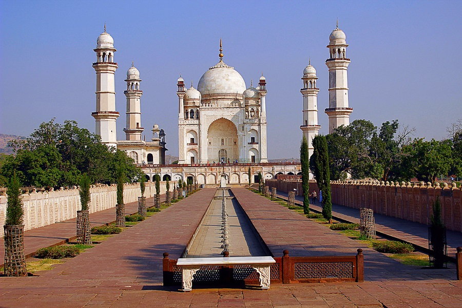
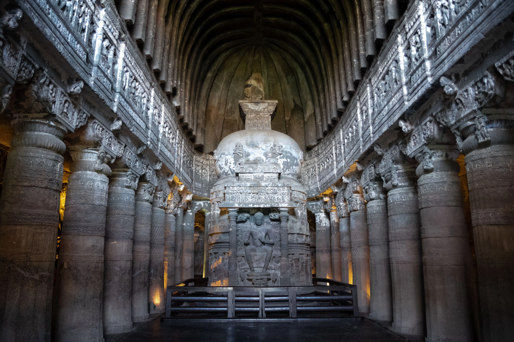
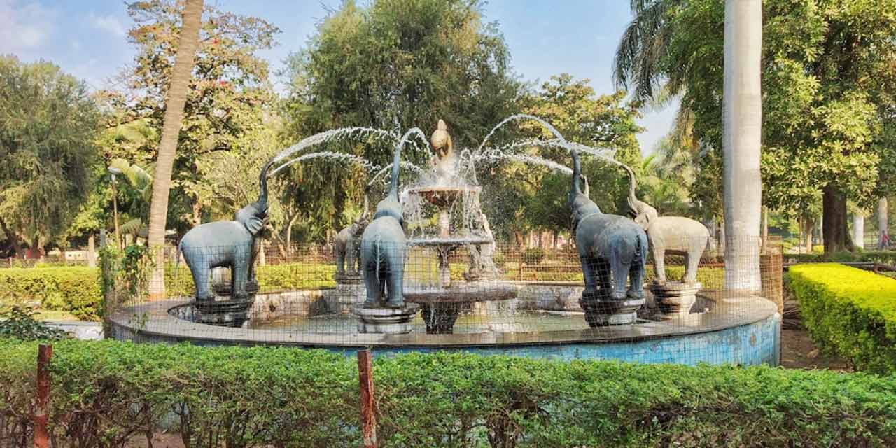
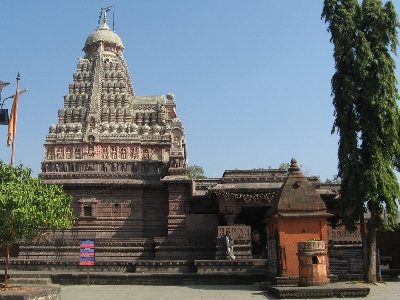
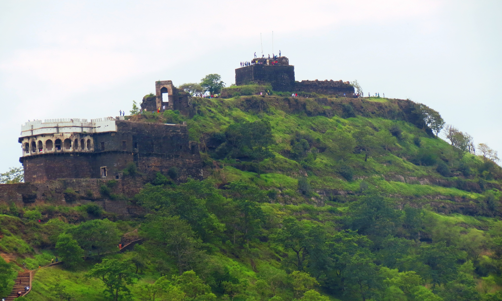
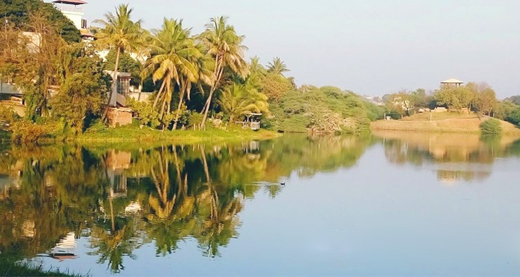

Bibi ka Maqbara
Bibi ka Maqbara,
Having a striking resemblance to Taj Mahal, the Bibi ka Maqbara is a beautiful mausoleum of Rabia-
Ul - Daurani alias Dilras Banu Begum, the wife of Mughal Emperor Aurangzeb. Bibi ka Maqbara was
constructed by Aurangzeb in the year 1661 in the memory of his wife. Aurangzeb attributed this
magnificent edifice in the name of his son Azam Shah who was born in the year 1653, so as to
commemorate Rabia - Ul - Daurani, who left for her heavenly abode in the year 1657.


Ellora Caves
Ellora caves,
Another World Heritage Site that the town boasts of, are the Ellora caves, that one must not miss
while in Aurangabad. The sculptures here, represent elements of three religions and do so grandly
and beautifully.
These 34 monasteries and temples, extending over more than 2 km, were dug side by side in the wall
of a high basalt cliff, not far from Aurangabad, in Maharashtra. Ellora, with its uninterrupted
sequence of monuments dating from A.D. 600 to 1000, brings the civilization of ancient India to
life.

Ajanta Caves
Ajanta Caves, Ajanta and Ellora Caves Overview
Located around 99 km from the town of Aurangabad, lie the Ajanta Caves now included in the list of
UNESCO World heritage Sites. Ajanta caves depict the Buddhist culture and their stories through
various sculptures and paintings. It also takes you to the world of Jatakas.
The Ajanta caves is a set of 3rock-cutut Buddhist caves that date back to the period between 2nd
century BC and 650 CE.

Soneri Mahal
Located 2 kilometres from the infamous Bibi Ka Maqbara and about 6 kilometres from the Aurangabad
Railway Station, is the last remaining Palace in the city, Soneri Mahal. This historical Palace is
said to have derived its name from the golden paintings that adorned it in the past. These paintings
have now disappeared, leaving the two-storeyed spacious building, which has a Rajput style
architecture.

Siddharth Garden and Zoo
Siddharth Garden, Aurangabad Overview
Sprawling over a large area is the well laid out and green landscaped Siddharth Garden enclosing a
park as well as zoo together. It is conveniently located at a distance of about 3 kilometers from
the Aurangabad railway station and about 4 kilometers from popular tourist attraction and landmark,
Bibi ka Maqbara. The Siddharth Garden is a popular picnic spot for the locals of Aurangabad. The
park is especially popular among joggers, nature lovers and photographers.

Ghrushneshwar Joytirlinga Temple
Grishneshwar temple, Aurangabad Overview
A UNESCO World Heritage Site, Grishneshwar Temple located in Ellora is one of the 12 Jyotirlingas in
India. Also known as Ghrneshwar or Dhushmeshwar Temple, this Jyotirlinga in Aurangabad is dedicated
to Lord Shiva and is considered an important pilgrimage site. Grishneshwar is the smallest of the
Jyotirlingas and is considered the last or the 12th Jyotirlinga of India.

Pitalkhora Caves
One of the earliest caves in Maharashtra, Pitalkhora Caves are located in Chandora hills, near
Bharmarwadi village, Aurangabad district. This 3rd-Century rock-cut Buddhist cave complex is the
largest group of monuments belonging to the Satavahana Dynasty. Also known as Brazen Glen, the caves
are made up of fourteen rock-cut structures which have fine architectural styles and paintings. Out
of these fourteen monuments, four are chaityas and the rest are viharas.

Daulatabad Fort
Located 15 km away from the main city of Aurangabad, Daulatabad Fort is an ancient fortification
that rises formidably from the midst of verdant greenery. Often hailed as one of the 'seven wonders
of Maharashtra', this architectural marvel is believed to have been built in the 12th century. Also
known as Devgiri fort, perhaps the most enchanting qualities is its location, from the zenith of
which you can capture a mesmerising view of the entire city. You need to hike some 750 odd steps up
to the top, but the view down below is a wonderful thing to behold.

Salim Ali Lake
Salim Ali Lake,
Located in the heart of Aurangabad, standing opposite the Himayat Bagh near Delhi Gate, is the
pristine Salim Ali Lake. Also known as the Salim Ali Sarovar, this lake is a beautiful bird-watching
spot, nesting a wide variety and number of migratory birds. There is also a well-stocked bird
sanctuary at the lake which is a humble abode to a number of local and foreign exotic species of
birds. Salim Ali Lake is an ideal place to be visited with family and friends. It is a must-visit
for photographers, nature lovers and bird watchers.